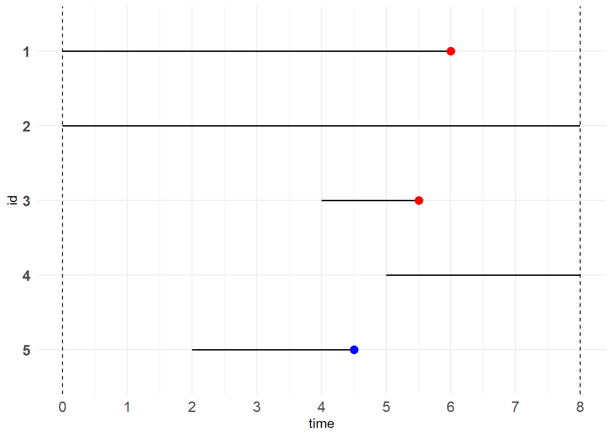
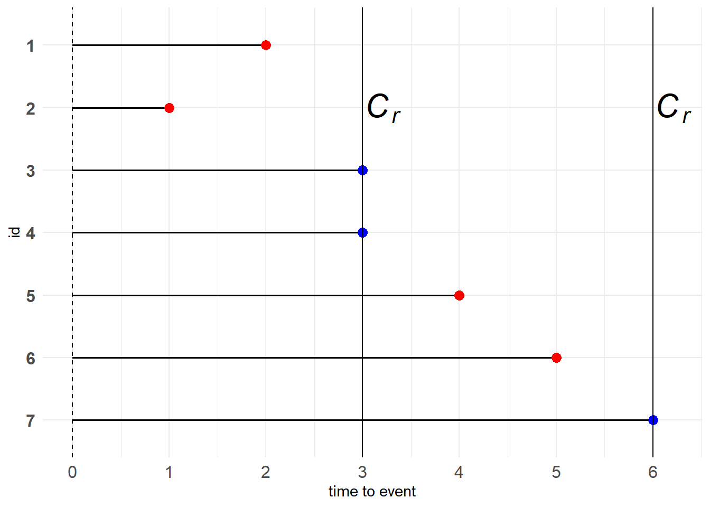
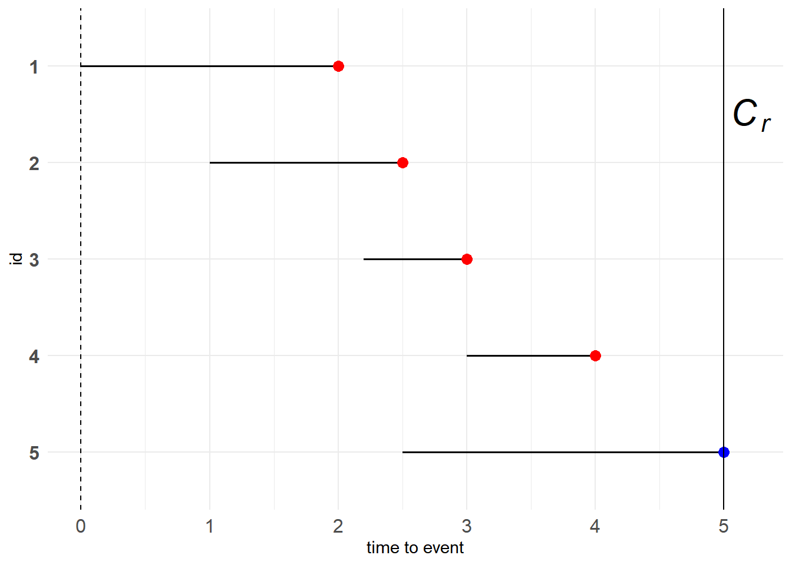
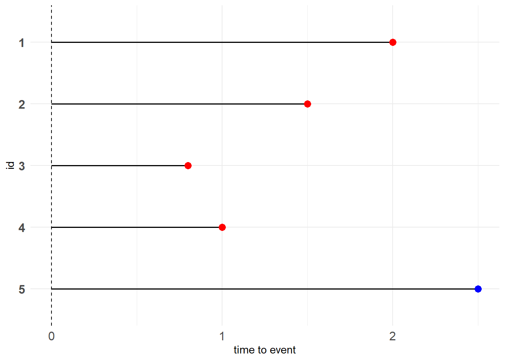
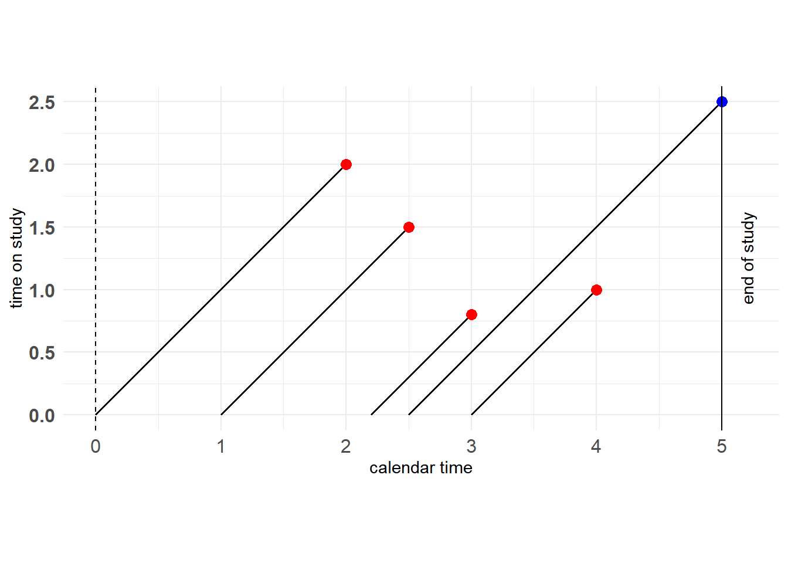
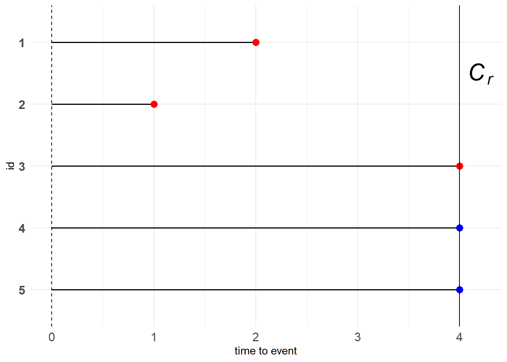
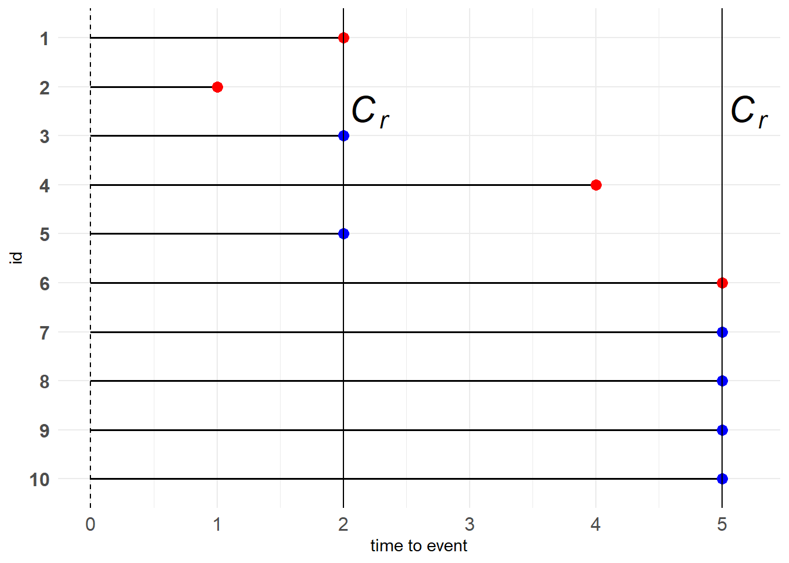
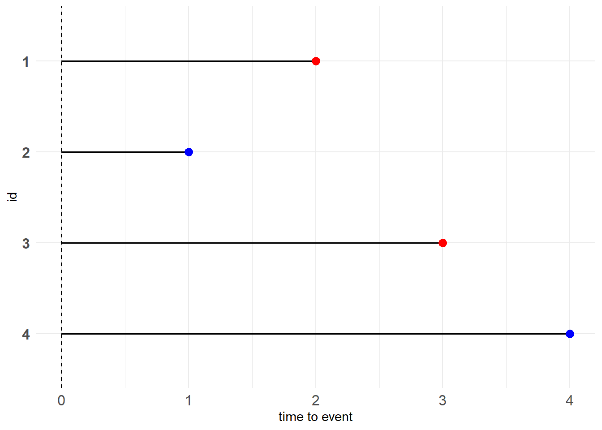

6.1 基本概念
在生存分析中，我们最关心的数据是从某个起始点开始到一个特定事件发生所经过的时间间隔，即time to event，也称“生存时间数据”。不妨令\(X\)表示观测对象真实的生存时间，令\(T\)表示观测到的并记录下来的生存时间。在实际研究中，由于多种因素的影响，我们不一定能够获取完整的生存时间数据，即\(X \neq T\)，因此有必要对数据类型进行区分，以便构建相应的模型。
6.1.1 删失数据
6.1.1.1 右删失
Type I censoring
人为预先设置右删失时间点\(C_r\)，则\(T\)的表达式为
\[ T = \begin{cases} X, &\text{if } X \leq C_r \\ C_r, &\text{if } X \gt C_r \end{cases} \tag{6.1} \]
为方便记录，令\(\delta=I\{X \leq C_r\}\)，则数据对为\((T, \delta)\)。

图 6.1: Type I censoring
图中红点代表目标事件在观察期内发生，蓝点代表右删失数据。
红、蓝点的含义下同
例子：就像一个水桶，我们能观测到的水量肯定小于等于水桶的容量，倘若接的水比水桶的容量还要多，那么就会溢出来，我们也就观测不到了，只会留下一个印象——水满了。
Progressive Type I censoring
Progressive Type I censoring相较Type I censoring，人为预先设置了多个右删失时间点，因次也称“逐步删失”。这种设置有个好处，就是能够控制成本。

图 6.2: Progressive Type I censoring
例子：假如你一开始招募了多个志愿者参与研究。让志愿者参与到研究当中是有成本的，而你的预算是有上限的。因此，当试验进行了一段时间后，你发现你的资金不足以支持你同时对多名志愿者进行观察，于是在某天），你决定让某些志愿者退出研究，仅留下部分志愿者继续观察。当然，其中有志愿者会自然地退出研究，因为他们的目标事件已经发生了。
Generalized Type I censoring
此前的右删失数据都有相同的时间起点，而Generalized Type I censoring允许观测对象在不同时间点被纳入到研究当中，但具有统一的删失时间点。

图 6.3: Generalized Type I censoring
由于我们更加关心生存时间的长度，不在乎什么时候开始，因此图6.3可变形为下图

图 6.4: Generalized Type I censoring
注意到该图仅用蓝点表示右删失数据点，而没有统一的竖线表示\(C_r\)。
如果你还是想知道观测对象什么时候加入到研究中，图6.3还可变形为下图

图 6.5: Generalized Type I censoring
纵坐标记录了观测对象参与到研究中的时长，即time to event；横坐标记录了观测对象什么时候加入到研究中；最右边的黑色实线表示研究预先设定的右删失时间点。显然，对于Generalized Type I censoring数据，右删失数据点必定落在右边的黑色实线上。
例子：就像一个公司从创立到倒闭，考虑“职工辞职”这个目标事件，那么总会有人中途加入或中途离开。其中“公司创立”对应着研究开始，“公司倒闭”对应着删失时间点\(C_r\)。而time to event对应的就是该职工在公司工作的时长，也就是我们感兴趣的“资历”，而不在乎他什么时候加入到这个公司。
Type II censoring
Type II相较Type I并没有直接设置右删失时间点，而是预先设置有\(r\)个观测对象发生目标事件，将剩余的尚未发生目标事件的观测对象都记为右删失数据。也就是说Type II censoring的右删失时间点与次序统计量\(T_{(r)}\)有关。这种设置能够有效地节约时间和控制成本。
若共有5个观测对象，设置\(r=3\)，则如下图所示

图 6.6: Type II censoring
例子：就像在一场选拔性比赛中，看谁能最快任务。现在共有100位参赛者，需要筛选出3名种子选手。于是当季军产生时这个比赛就已经结束了。
Progressive Type II censoring
Type II表示该类型数据需要预先设置参数\(r\)，Progressive表示需要预先设置多个\(r\)。考虑两次删失的情形，我们预先设置了\(r_1\)和\(r_2\)，当总共\(n\)个观测对象中有\(r_1\)个观测对象率先发生了目标事件，那么这\(r_1\)个观测对象的time to event将会被记录下来，同时出于对成本的考虑，我们还会将\(n_1-r_1\)个观测对象移除研究，继续观察剩余的\(n-n_1\)个观测对象，直到又有\(r_2\)个观测对象发生目标事件，此时则有\(n-n_1-r_2\)个观测对象被记录为右删失数据。也就是说，Progressive Type II censoring的删失时间点与次序统计量\(T_{(r_1)}\)、\(T_{(n_1+r_2)}\)有关。
务必与Progressive Type I censoring联系起来
对于10个观测对象，我们设置\(r_1=r_2=2\)，同时出于成本的考虑，在出现\(r_1\)个目标事件时主动去除2个观测对象，则剩下6个观测对象进入到第二轮中。如下所示

图 6.7: Progressive Type II censoring
例子：想不出了。
Random censoring
出于某些原因，部分观测对象可能会观测不到，也就不知道其具体的生存时间，于是被记为右删失数据。
可能的原因：
- 观测对象失联，丢失了
- 观察对象终止于其他事件
- …

图 6.8: Random censoring
例子：例如我们对“肺癌”感兴趣，但患者还患有其他疾病，可能因其他疾病而死亡，此时也算是右删失。
6.1.1.2 左删失
对于左删失时间点\(C_l\)，则\(T\)的表达式为
\[ T = \begin{cases} C_l, &\text{if } X \lt C_l \\ X, &\text{if } X \geq C_l \end{cases} \tag{6.2} \]
为方便记录，令\(\varepsilon=I\{X\geq C_l\}\)，则数据对为\((T,\varepsilon)\)
例子：考虑疾病的发生，当一个人进医院进行体检时，若检测出患有某种疾病，则肯定是在体检之前就已经染上了疾病，但不知道是什么时候染上的，那么在医院体检的时间点就是左删失时间点\(C_l\)。
6.1.1.3 双删失
根据右删失和左删失的概念，考虑研究中可能同时存在右删失数据和左删失数据，即双删失。
双删失更像是一种现象（右删失与左删失同时在某些研究中出现的现象），而不是数据类型
记数据对为\((T, \delta)\)，其中\(T=max(min(X, C_r), C_l)\)。\(\delta\)定义为\(\delta=I\{X \leq C_r\} - 2I\{X \lt C_l\}\)，当\(\delta=1\)时，表示正常的生存时间，当\(\delta=0\)时，表示右删失数据，当\(\delta=-1\)时，表示左删失数据。
如果左删失的定义没错的话，感觉应该是\(X \lt C_l\)而不是\(X \leq C_l\)
例子：假如你问某人什么时候开始打的羽毛球，你可能得到的回答有：1.我20年11月13号开始打的；2.不记得了，至少大学前就开始打了；3.我还没打过。这三个回答分别对应正常的生存时间、左删失数据和右删失数据（还没打过说明目标事件尚未发生，以后可能会打，即为右删失）。
6.1.2 截断数据
对于删失数据，虽然我们不知道具体的生存时间，但至少我们是接触到了观测对象，并且掌握了生存时间的部分信息（可能大于或小于某个值，或者在某个区间内）。而对于截断数据，研究对象并没有进入到我们的观察窗口，更谈不上其携带的生存时间信息。
设置一个观察窗口\((Y_L,Y_R)\)，当\(Y_R=+\infty\)时，只有\(X \gt Y_L\)的研究对象才能被纳入到我们的研究中；当\(Y_L=0\)时，只有\(X \leq Y_R\)的研究对象才能被纳入到我们的研究中。也就是说，进入到我们的研究中是需要门槛的、有条件的，而且这种条件往往与系统性原因有关（例如研究设计）。
例子1：如果要研究老人的预期寿命，并在退休中心开展调查。该研究忽略了那些年龄未到退休中心准入门槛的老人，但这些老人也应该属于本研究的范畴之中。这属于左截断数据。
例子2：利用天文望远镜观测天体。100年前观测到的天体数量和如今能观测到的天体数量绝对是不一样的。只是以前设备落后，精度有限，观测不到那么多的天体。因此这属于右截断数据。
6.1.3 函数
生存函数
记\(X\)为代表生存时间的随机变量，则其密度函数\(f(x)\)为
\[ f(x)=\lim_{\Delta x \rightarrow 0} \frac{P(x \leq X \leq x+\Delta x)}{\Delta x} \tag{6.3} \]
记其累积分布函数为
\[ F(x)=P(X \leq x) \tag{6.4} \]
定义生存函数为
\[ S(x)=P(X \gt x)=1-F(x)=\int_x^\infty f(t)dt \tag{6.5} \]
\(T \gt t\)具有“生存”的意味
则
\[ f(x)=-\frac{dS(x)}{dx} \tag{6.6} \]
当\(X\)是离散随机变量时，记\(P(X=x_j)=p(x_j),j=1,2,\dots\)。此时的生存函数为
\[ S(x)=P(X \gt x)=\sum_{x_j \gt x}p(x_j) \tag{6.7} \]
风险函数
\[ \begin{aligned} b(x)&=\lim_{\Delta x \rightarrow 0}\frac{P(x \leq X \leq x+\Delta x \mid X \geq x)}{\Delta x} \\ &= \lim_{\Delta x \rightarrow 0}\frac{F(x+\Delta x)-F(x)}{(1-F(x))\Delta x} \\ &= \frac{f(x)}{S(x)} \\ &= \frac{d}{dx}(-\ln S(x)) \end{aligned} \tag{6.8} \]
这种导函数与原函数在分子分母的情况可以考虑为对数函数求导
由定义可知，风险函数代表了目标事件的即时发生率。
根据风险函数可得累积风险函数
\[ H(x)=\int_0^x b(u)du=-\ln S(x) \tag{6.9} \]
则
\[ S(x)=\exp\{-H(x)\}=\exp\{-\int_0^x b(u)du\} \tag{6.10} \]
当\(X\)是离散随机变量时，则
\[ b(x_j)=P(x_j \leq X \lt x_{j+1}|X \geq x_j)=\frac{p(x_j)}{S(x_{j-1})},\quad j=1,2,\dots \tag{6.11} \]
注意\(S(x)=P(X \gt x)\)、\(S(x_0)=1\)、\(p(x_j)=S(x_{j-1})-S(x_j)\)，则
\[ b(x_j)=1-\frac{S(x_j)}{S(x_{j-1})} \tag{6.12} \]
则
\[ \begin{aligned} S(x)&=\prod_{x_j \leq x} \frac{S(x_j)}{S(x_{j-1})} \\ &=\prod_{x_j \leq x}(1-(1-\frac{S(x_j)}{S(x_{j-1})})) \\ &=\prod_{x_j \leq x}(1-b(x_j)) \end{aligned} \tag{6.13} \]
平均剩余寿命
\[ \begin{aligned} mrl(x)=E(X-x|X \gt x)&=\int_x^\infty(t-x)f(t|X \gt x)dt \\ &=\int_x^\infty\frac{(t-x)f(t)}{S(x)}dt \\ &=\frac{\int_x^\infty(x-t)dS(t)}{S(x)} \\ &=\frac{S(t)(x-t)|^\infty_x+\int_x^\infty S(t)dt}{S(x)} \\ &=\frac{\int_x^\infty S(t)dt}{S(x)} \end{aligned} \tag{6.14} \]
注意\(dS(x)=-f(x)dx\)
6.1.4 似然函数
对于完整的生存时间，其密度函数为\(f(x)\)。而对于删失数据和截断数据，则有另外的表达。
\[ \begin{aligned} Right-censored &: S(C_r) \\ Left-censored &: 1-S(C_l) \\ Interval-censored &: S(L)-S(R) \\ Left-truncated &: f(x)/S(Y_L) \\ Right-truncated &: f(x)/(1-S(Y_R)) \\ Interval-truncated &: f(x)/(S(Y_L)-S(Y_R)) \end{aligned} \tag{6.15} \]
注意\(f/S\)的形式是条件概率的含义
以删失数据为例，似然函数可以表示为
\[ L \propto \prod_{i \in D}f(x_i)\prod_{i \in R}S(C_r)\prod_{i \in L}(1-S(C_l))\prod_{i \in I}[S(L_i)-S(R_i)] \tag{6.16} \]
其中\(D\)、\(R\)、\(L\)、\(I\)都是对应的数据类型集合。
根据数据类型写出对应的元素即可。下面举个例子。
假设\(X_i \stackrel{i.i.d}{\sim} Exp(\lambda)\)，观测数据为\((T_i,\delta_i)\)，其中\(\delta_i=I(T_i \leq C_i)\)表示是否为右删失数据。则似然函数为
\[ L(\lambda)=\prod_{i=1}^n \{\lambda \exp(-\lambda T_i)\}^{\delta_i}\{\exp (-\lambda T_i)\}^{(1-\delta_i)} \tag{6.17} \]
可得极大似然估计为
\[ \hat \lambda=\frac{\sum_{i=1}^n \delta_i}{\sum_{i=1}^nX_i} \tag{6.18} \]